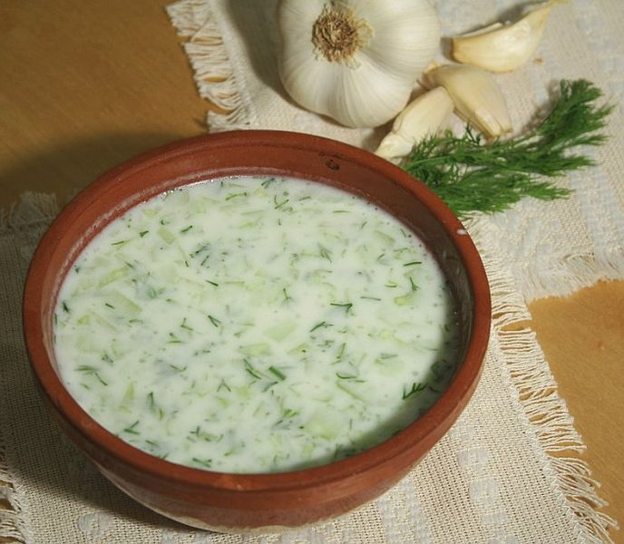

Tarator Recipe
Back to Homepage

Description
Tarator is a traditional Bulgarian cold soup made with yogurt,
cucumbers, garlic, and dill. It's a refreshing dish perfect for hot summer days
and is often served as an appetizer or light meal.
Ingredients
- 500g Greek yogurt
- 2 large cucumbers
- 4 cloves of garlic
- 1/4 cup fresh dill, chopped
- 2 tablespoons olive oil
- Salt and pepper to taste
Steps
- Peel and dice the cucumbers into small pieces.
- Grate the garlic and mix it with the diced cucumbers.
- Add the Greek yogurt, fresh dill, olive oil, salt, and pepper to the mixture.
- Stir everything together until well combined.
- Refrigerate for at least 1 hour before serving.
- Serve chilled with crusty bread or as a side dish.